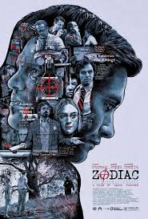

SPOTSTAR - DAVID FINCHER

David Fincher is a master of psychological thrillers and dark, atmospheric storytelling. Born in 1962, he began his career directing music videos before transitioning to feature films. He first gained widespread attention with the chilling thriller Seven, known for its gritty visuals and shocking ending. Fincher is celebrated for his meticulous style, often shooting dozens of takes to achieve perfection. His films frequently explore themes of obsession, identity, and the darker sides of human behavior. Fight Club became a cult classic, challenging social norms and sparking debate among audiences. He continued to impress with films like Zodiac, The Social Network, Gone Girl, and The Girl with the Dragon Tattoo. Fincher has a talent for creating tension and complexity, often through moody lighting and sharp editing. His work is marked by a cold precision, yet it never loses emotional impact. He often collaborates with composers Trent Reznor and Atticus Ross, whose music enhances the atmosphere of his films. Fincher also helped shape modern television with the series Mindhunter and House of Cards. His storytelling is intelligent, layered, and often unsettling. Fincher remains one of the most respected and influential directors of contemporary cinema.
POPULAR FILMS


